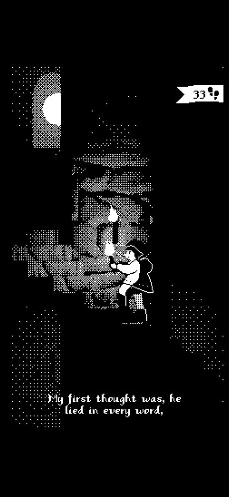

ACT I · THE DESOLATE GATE
1843 ♠
MID
🔥
3/3

🛡️
1843
👣
A Fool's
Errand
The Dark Tower Ascent
"My first thought was, he lied in every word... yet to the Dark Tower came."
[Swipe Up · Wheel · Space · W]
Poem: R. Browning
Est. 1843
EVADED!